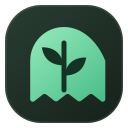

YOUR SPACE TO THINK
Make room for what matters.
A clear space for your links. A little focus for your day.
ONE THING AT A TIME 0 sessions today
Only for today. Saved on this device.YOUR COLLECTION

lumen.YOUR SPACE TO THINK
A clear space for your links. A little focus for your day.
YOUR COLLECTION